Modélisation de l’évolution temporelle des espèces forestières par apprentissage automatique
Ayman ZEJLI & Loïc MAGNAN
Tuteur : Chafik SAMIR
1. Introduction
L’analyse de la dynamique forestière face aux mutations climatiques contemporaines représente un défi majeur
pour la gestion durable des ressources naturelles. Ce projet propose de modéliser l’évolution temporelle des
espèces arborées en exploitant des données de terrain hétérogènes. En couplant les techniques
d'apprentissage automatique aux Systèmes d’Information Géographique (SIG), nous analysons l'impact de
facteurs critiques tels que la température, la sécheresse et l'âge des arbres pour anticiper les mutations
des écosystèmes.
2. Approche de modélisation et fondamentaux
2.1 Formalisme théorique des Processus Gaussiens
Le processus gaussien (GP) constitue une généralisation du concept de loi normale appliquée aux fonctions
continues. Alors qu’une loi normale classique décrit la distribution d’un scalaire ou d’un vecteur aléatoire
fini, le processus gaussien définit une distribution de probabilité sur un ensemble de fonctions. Cette
approche bayésienne non paramétrique permet de modéliser la forme probable d’une fonction tout en
quantifiant précisément l’incertitude associée à chaque prédiction.
Un processus gaussien est intégralement caractérisé par deux fonctions fondamentales :
La fonction moyenne $m(x)$, qui définit l'espérance de la fonction en tout point :
$m(x) = \mathbb{E}[f(x)]$. Dans la pratique, on suppose souvent $m(x) = 0$ par défaut.
La fonction de covariance $k(x, x')$, ou noyau (Kernel), qui modélise la
dépendance statistique entre deux points : $k(x, x') = \text{Cov}(f(x), f(x'))$.
La relation formelle s'écrit alors : $$f(x) \sim \mathcal{GP}(m(x), k(x, x'))$$
Pour tout ensemble fini de points d’entrée $X = [x_1, \dots, x_n]$, le vecteur aléatoire correspondant $f =
[f(x_1), \dots, f(x_n)]^T$ suit une loi normale multivariée : $$f \sim \mathcal{N}(m(X),
K(X, X))$$ où $K$ est la matrice de Gram telle que $K_{ij} = k(x_i, x_j)$. Cette structure permet au modèle
de calculer une distribution a posteriori, offrant une prédiction ponctuelle accompagnée d'une
variance prédictive.
2.2 Étude expérimentale et comparaison de modèles en dimension 1
2.2.1 Analyse sur fonction périodique simple : $y = \cos(x)$
Afin d'illustrer la capacité des processus gaussiens à reconstruire une fonction continue à partir d'un
nombre limité d'observations, nous avons utilisé un modèle en une dimension pour approximer la fonction
$f(x) = \cos(x)$. Pour cette approche, le modèle a été entraîné sur seulement 20 points choisis
aléatoirement parmi 100 points générés uniformément dans l’intervalle $[0, 10]$. Les prédictions ont ensuite
été effectuées sur l'ensemble des 100 points pour évaluer la qualité de l'interpolation par rapport au
signal originel.
Dans une seconde approche, un réseau de neurones simple en une dimension a été utilisé pour approximer la
même fonction. Ce modèle, de type MLP (Multi-Layer Perceptron), est composé de deux couches cachées de 64
neurones chacune. L'entraînement a été réalisé sur 100 points générés aléatoirement durant 300 époques avec
un batch size de 8. Les prédictions obtenues sur un intervalle de test de 100 points permettent de
visualiser la capacité du réseau à généraliser la fonction cosinus à partir des données disponibles, sans
connaissance a priori de sa régularité.
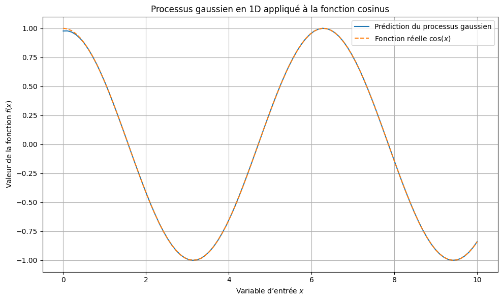
Figure 1 : Prédiction d’un processus gaussien 1D pour
l’approximation de la fonction cosinus sur l'intervalle [0, 10].
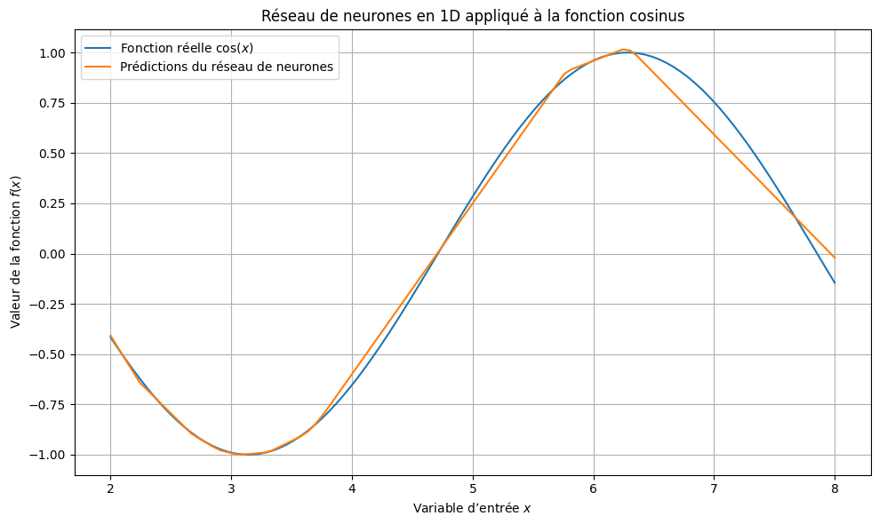
Figure 2 : Approximation de la fonction cosinus à l’aide d’un réseau
de neurones (300 époques, batch size 8).
L'interprétation visuelle des résultats met en évidence une supériorité notable du modèle probabiliste dans
ce scénario de données restreintes. Comme l'illustre la Figure 1, le processus gaussien
parvient à reconstruire la fonction de manière quasi-parfaite malgré le faible nombre de points
d'entraînement (20 points). L'aspect lisse de la courbe démontre que le noyau a correctement capturé la
structure périodique du signal sur l'intervalle étudié.
À l'inverse, la Figure 2 révèle les limites de l'approche par réseau de neurones face à cet
échantillonnage. Bien que la tendance globale soit respectée, la courbe présente des irrégularités locales.
Contrairement au GP qui interpole par nature via sa structure de covariance, le réseau de neurones approxime
la fonction par optimisation de poids. Sans une densité de points très élevée, il peine à égaler la fluidité
du processus gaussien, confirmant la robustesse de ce dernier pour des signaux périodiques lisses avec peu
de données.
2.2.2 Analyse sur fonction complexe : $y = \cos(x) + x^2 - 20\sin(5x)$
Pour cette seconde phase expérimentale, nous testons la capacité des modèles à généraliser une structure
complexe à partir d'un échantillonnage partiel. Le protocole consiste à sélectionner aléatoirement
$n_{train}$ points parmi un ensemble de $N$ points générés, puis à utiliser ces modèles pour prédire la
fonction sur l'intégralité du domaine. L'objectif est d'évaluer la précision de la reconstruction via
l'Erreur Quadratique Moyenne (MSE).
Dans le cadre des Processus Gaussiens, le choix du noyau (kernel) est déterminant car il définit les
corrélations a priori entre les points. Nous avons testé quatre types de noyaux pour capturer les
différentes composantes de notre fonction cible :
Radial Basis Function (RBF) : Le noyau par défaut, supposant une fluidité infinie.
$$k(x, x') = \exp\left(-\frac{d(x, x')^2}{2l^2}\right)$$
Rational Quadratic : Équivalent à une somme de noyaux RBF avec différentes longueurs
d'échelle, idéal pour des données variant à plusieurs échelles.
$$k(x, x') = \left(1 + \frac{d(x, x')^2}{2\alpha l^2}\right)^{-\alpha}$$
Exp-Sine-Squared : Conçu pour capturer des périodicités strictes.
$$k(x, x') = \exp\left(-\frac{2\sin^2(\pi d(x, x')/p)}{l^2}\right)$$
Matérn : Une généralisation du RBF permettant de modéliser des fonctions moins lisses,
contrôlée par le paramètre $\nu$.
$$k(x, x') = \frac{1}{\Gamma(\nu)2^{\nu-1}}\left(\frac{\sqrt{2\nu}}{l}d(x, x')\right)^\nu
K_\nu\left(\frac{\sqrt{2\nu}}{l}d(x, x')\right)$$
Les résultats de ces tests montrent que la flexibilité du noyau Rational Quadratic ou
l'utilisation du Matérn permettent une meilleure adaptation aux oscillations rapides
induites par le terme $-20\sin(5x)$ que le RBF classique. La Figure 3 présente la
prédiction optimale obtenue via le Processus Gaussien.
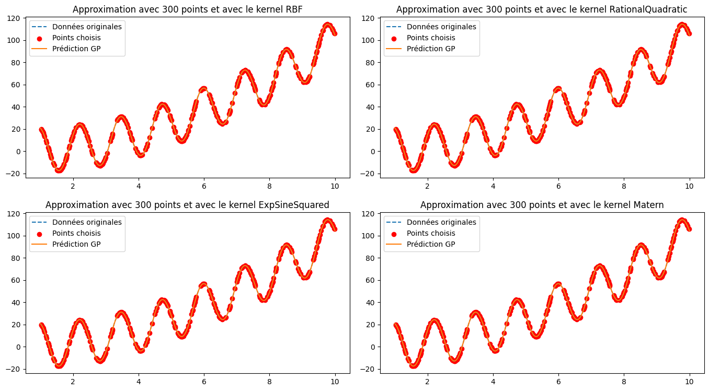
Figure 3 : Comparaison des prédictions des kernels GP sur $y =
\cos(x) + x^2 - 20\sin(5x)$
À l'inverse, l'approche par Réseau de Neurones (MLP) aborde ce problème sans hypothèse
géométrique préalable. Le modèle doit apprendre la tendance quadratique et les oscillations simultanément à
travers l'optimisation de ses poids. Pour cette fonction complexe, une étape de
normalisation a été indispensable : les entrées $x$ ont été ramenées dans l'intervalle $[0,
1]$ par un Min-Max Scaling, tandis que les sorties $y$ ont subi une standardisation ($Z$-score)
pour stabiliser la descente de gradient de l'optimiseur Adam.
L'architecture retenue est un réseau profond composé de trois couches denses de respectivement 256
neurones. L'utilisation de la fonction d'activation tanh entre chaque couche
permet de capturer les non-linéarités complexes. Bien que le modèle soit capable de minimiser l'erreur
quadratique moyenne (MSE) sur l'ensemble des $N$ points, il nécessite une phase d'entraînement intensive de
300 époques avec un batch size de 128.
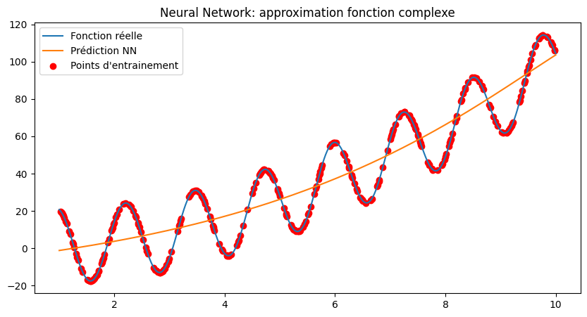
Figure 4 : Prédictions d’un réseau de neurones sur $y =
\cos(x) + x^2 - 20\sin(5x)$
L'interprétation de la Figure 4 met en lumière une limite structurelle du réseau de neurones
face à des signaux multi-échelles. On constate que la prédiction épouse parfaitement la tendance de fond
parabolique. Cependant, elle lisse presque intégralement les oscillations à haute fréquence induites par le
terme sinusoïdal. En agissant comme un filtre passe-bas, le réseau privilégie la
minimisation de l'erreur globale sur la composante de forte amplitude, négligeant la structure locale
pourtant présente dans les points d'entraînement (points rouges). À l'inverse, le Processus
Gaussien, grâce à un noyau adapté, parvient à conserver cette fidélité aux variations rapides
du signal.
2.2.3 Analyse sur fonction de haute complexité : $y = \ln(x) + 4x\cos(x^2)$
Pour pousser l'évaluation à un niveau critique, nous introduisons une fonction présentant une fréquence non
constante et une croissance logarithmique : $y = \ln(x) + 4x\cos(x^2)$. Ce signal est particulièrement difficile
à modéliser car la densité et l'amplitude des oscillations augmentent de manière quadratique avec $x$, rendant
l'interpolation extrêmement sensible au choix du modèle.
Étude comparative des noyaux (GP) : La Figure 5 illustre la sensibilité du
Processus
Gaussien face à ce signal non stationnaire. Le noyau ExpSineSquared échoue totalement à capturer la
dynamique
car il suppose une périodicité fixe, alors que la fréquence ici s'accélère. Le noyau RBF, trop rigide,
lisse
les oscillations dès que la fréquence augmente. À l'inverse, le noyau RationalQuadratic offre
la
meilleure reconstruction visuelle, s'adaptant aux différentes échelles de variation. Le noyau
Matern
($\nu=1.5$) capture bien les pics mais montre des signes de saturation sur les amplitudes extrêmes en fin
d'intervalle.
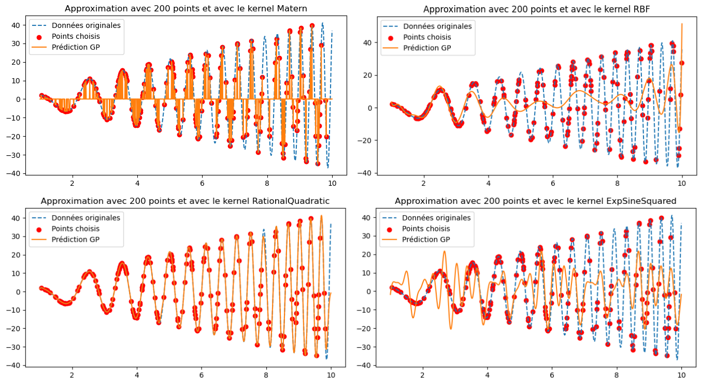
Figure 5 : Analyse de l'influence des kernels GP sur une fonction à
fréquence
variable. On observe que seul le noyau RationalQuadratic (en bas à gauche) parvient à suivre
l'accélération
du signal.
Évaluation du Réseau de Neurones (NN) : En parallèle, le modèle ReLU implémenté (64 neurones) a
été
testé sur ce même signal. Comme le montre la Figure 6, le réseau est capable de saisir la
tendance
logarithmique ascendante (la ligne moyenne du signal), mais il est totalement incapable de modéliser les
oscillations.
L'utilisation de l'activation ReLU, associée à une architecture légère, contraint le modèle à
une
approximation trop simpliste qui ignore les composantes haute fréquence.
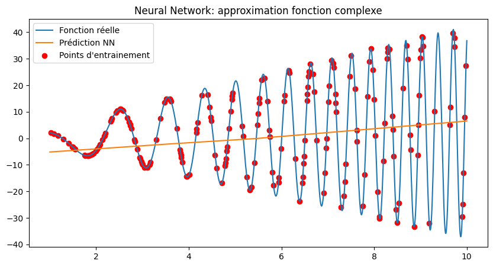
Figure 6 : Prédiction du réseau de neurones. La courbe orange montre un
lissage extrême (effet filtre passe-bas), ne capturant que la tendance de fond logarithmique.
La comparaison visuelle est sans appel : le GP avec un noyau RationalQuadratic (Figure 5)
surpasse largement le réseau de neurones (Figure 6) en termes de fidélité au signal. Bien que le NN soit
beaucoup
plus rapide à s'exécuter sur de grands jeux de données, il agit ici comme un simple lisseur de tendance. Pour la
modélisation forestière, où les micro-variations temporelles sont essentielles, le GP reste l'outil de
référence,
malgré un coût de calcul plus élevé lié à l'inversion de la matrice de covariance du kernel.
En conclusion, sur des signaux à fréquence variable et amplitude croissante, la flexibilité du GP permet une
reconstruction structurelle là où le NN ReLU standard échoue par manque de profondeur ou de points
d'entraînement
massifs.
2.2.4 Synthèse et bilan de l'étude 1D
Après avoir analysé individuellement chaque fonction, nous proposons ici une vue d'ensemble des performances.
Cette comparaison permet de quantifier l'efficacité des modèles selon la densité de l'échantillonnage.
Premier scénario : Échantillonnage faible (20 points)
Ce test simule des situations où les relevés de terrain sont rares. On observe une nette supériorité des
Processus Gaussiens pour l'interpolation précise.
Résultats sur $y = \cos(x)$ (20 pts)
Modèle
Temps (s)
MSE
Param.
GP (RatQuad)
0.0284
$7.3 \times 10^{-12}$
2
GP (ExpSine)
0.0173
$7.3 \times 10^{-12}$
2
NN (MLP)
3.004
0.149
4353
Cependant, dès que la fonction gagne en complexité, l'écart de performance se creuse, notamment sur la
gestion des fréquences élevées.
Second scénario : Échantillonnage dense (200 points)
En augmentant le nombre de points, le Réseau de Neurones améliore sa précision, mais reste largement distancé
par la rapidité d'exécution des Processus Gaussiens.
D’après ces observations, on peut conclure que, pour la prédiction de fonctions, le processus gaussien se
révèle globalement plus performant qu’un réseau de neurones. En effet, que ce soit en termes de temps de
calcul ou d’erreur quadratique moyenne (MSE), le processus gaussien obtient de meilleurs résultats. Il
serait certes possible d’augmenter la complexité du réseau de neurones en ajoutant des couches ou davantage
de neurones, mais cela entraînerait inévitablement une hausse du temps de calcul, probablement pour une MSE
moins satisfaisante et un nombre de paramètres nettement plus élevé que celui d’un processus gaussien.
Transition vers la 2D : Bien que les Processus Gaussiens dominent en 1D, l'analyse
forestière nécessite de prendre en compte plusieurs variables simultanées (coordonnées spatiales,
température). Dans la section suivante, nous allons évaluer si cette supériorité se maintient lors du
passage à des dimensions supérieures.
2.3 Modélisation spatiale et extension en dimension 2
Le passage à la dimension 2 est crucial pour notre étude forestière, car il permet de simuler la répartition
spatiale des espèces sur une parcelle définie par des coordonnées $(x, y)$. Dans cette section, nous évaluons la
capacité des modèles à reconstruire des surfaces continues à partir d'un échantillonnage aléatoire réparti sur
un domaine unitaire $[0, 1] \times [0, 1]$.
2.3.1 Structure et Approche du Réseau de Neurones Convolutif (CNN 2D)
Pour l'approximation de fonctions continues en deux dimensions, nous avons implémenté un réseau de neurones
convolutif (CNN 2D). Contrairement à un réseau dense classique, le CNN est capable de capturer des dépendances
spatiales grâce à ses filtres. Le modèle reçoit en entrée une grille où chaque pixel contient ses propres
coordonnées normalisées $[x, y]$.
L'architecture repose sur une première couche de 128 filtres ($4 \times 4$) avec une activation tanh pour
extraire les motifs locaux complexes, suivie d'une couche de 32 filtres pour modéliser les interactions entre
les axes. Enfin, une couche de sortie ($1 \times 1$) produit la valeur prédite. L'apprentissage est assuré par
l'optimiseur Adam en minimisant l'erreur quadratique moyenne (MSE). Bien que cette méthode soit puissante, elle
reste dépendante de la structure de la grille et peut générer des approximations moins fluides que les méthodes
stochastiques.
2.3.2 Fonction simple : $f_1(x, y) = \cos(2\pi(x + y))$
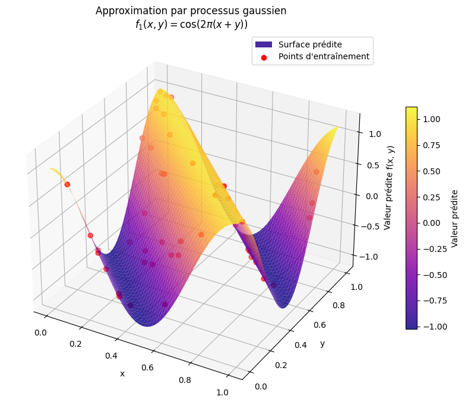
Figure 7 : Reconstruction par Processus Gaussien.
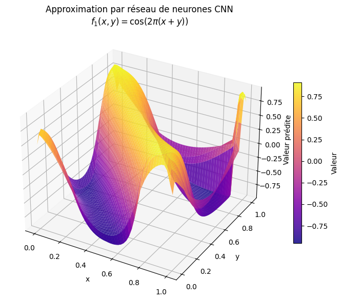
Figure 8 : Approximation par CNN 2D.
Sur cette fonction périodique simple, le Processus Gaussien (Figure 7) offre une surface d'une
régularité mathématique parfaite, épousant les crêtes diagonales sans aucune distorsion. En revanche,
l'observation de la Figure 8 (CNN) révèle des faiblesses structurelles : on note un aspect
"haché" sur les bords de la surface et une instabilité dans les zones de transition. Le réseau peine à maintenir
une courbure constante, créant des ondulations parasites là où le GP reste parfaitement lisse.
Figure 10 : Approximation par CNN 2D de la structure complexe.
Pour cette structure en "boîte à œufs", l'écart visuel est encore plus marqué. Le GP (Figure 9) reconstitue
fidèlement l'amplitude des pics et des vallées. La prédiction du CNN (Figure 10) montre un effondrement notable
de la dynamique du signal : les sommets sont "écrasés" et la surface semble subitement s'aplatir vers les bords.
On observe également des artefacts géométriques (lignes de cassure) qui témoignent de la difficulté du réseau à
généraliser la fonction trigonométrique en dehors des points d'entraînement directs.
Figure 11 : Reconstruction GP isolant le pic central.
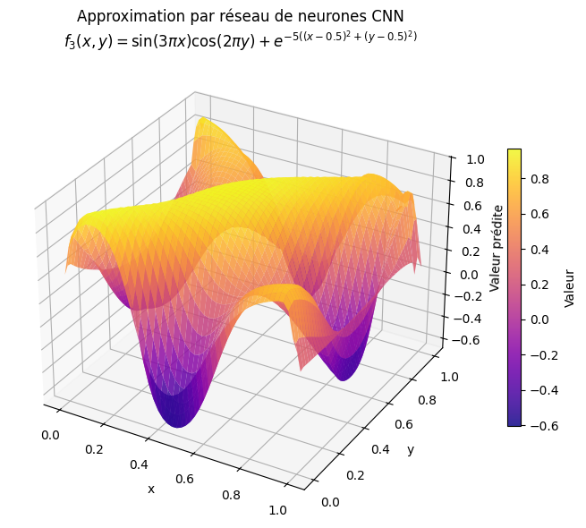
Figure 12 : Approximation CNN 2D de la fonction hybride.
Cette fonction mélangeant oscillations et singularité centrale met en évidence la supériorité du GP (Figure 11),
qui parvient à isoler le pic exponentiel tout en stabilisant le relief périphérique. La Figure
12 montre que le CNN échoue presque totalement à stabiliser la surface : le pic central est déformé
et le relief environnant est noyé dans un bruit visuel important. Le réseau semble "perdu" entre la gestion du
pic de forte amplitude et les micro-oscillations, produisant un rendu chaotique et inutilisable pour une
cartographie de précision.
2.3.5 Synthèse comparative des performances en 2D
Le tableau ci-dessous regroupe les métriques de performance obtenues pour les deux modèles sur les trois surfaces
de test. Cette comparaison quantitative permet de valider les observations visuelles faites précédemment sur la
fidélité de la reconstruction.
Fonction
Modèle
MSE (Erreur)
Score $R^2$
Incertitude moyenne (GP)
$f_1$ : cosinus simple
Processus Gaussien
0.0002
0.9996
0.0090
Réseau CNN
0.0507
0.8986
/
$f_2$ : boîte à œufs
Processus Gaussien
0.0001
0.9996
0.0056
Réseau CNN
0.0941
0.6233
/
$f_3$ : pic + oscillations
Processus Gaussien
0.0037
0.9874
0.0191
Réseau CNN
0.1462
0.4978
/
L'analyse de ces résultats confirme que le Processus Gaussien (GP) reste le modèle le plus
performant pour la modélisation en dimension 2. Sur les fonctions $f_1$ et $f_2$, le GP atteint une précision
quasi parfaite avec des scores $R^2$ de 0,9996, tandis que le réseau CNN montre des signes de faiblesse,
notamment sur la fonction $f_2$ où son score chute à 0,6233.
Le cas de la fonction complexe $f_3$ est le plus révélateur : alors que le Processus Gaussien maintient une
excellente capacité d'approximation ($R^2 = 0,9874$), les performances du réseau CNN s'effondrent avec un score
de 0,4978 et une erreur (MSE) nettement plus élevée (0,1462 contre 0,0037 pour le GP). Cette différence
s'explique par la capacité du GP à gérer nativement les corrélations spatiales et les changements d'échelle via
son noyau, là où le CNN peine à généraliser à partir de coordonnées brutes sur des signaux complexes.
En conclusion de cette étude bidimensionnelle, le Processus Gaussien s'impose à nouveau comme l'outil de
référence. Sa capacité à fournir une estimation de l'incertitude (très faible ici, entre 0,005 et 0,019) offre
une garantie supplémentaire sur la fiabilité de la cartographie forestière générée, ce que ne permet pas
l'architecture CNN utilisée.
Transition vers l'application forestière : Cette étude comparative sur fonctions simulées a
démontré la robustesse des Processus Gaussiens (GP) pour modéliser des signaux complexes avec une grande
fluidité et une gestion fiable de l'incertitude. Forts de ces résultats théoriques, nous allons désormais
appliquer ces modèles à des données forestières réelles. L'enjeu sera d'évaluer si la supériorité du GP se
confirme face au bruit et à la variance de séries temporelles pluriannuelles (température et humidité), afin
de fournir des prédictions robustes pour la préservation de ces écosystèmes fragiles.
3. Application aux écosystèmes forestiers : Étude de cas réelle
Après avoir validé la supériorité des Processus Gaussiens sur des fonctions mathématiques simulées, nous
orientons désormais nos travaux vers une application concrète en écologie forestière. L'objectif est de
confronter nos modèles à la complexité de données réelles de terrain, caractérisées par un bruit de mesure et
une variabilité environnementale élevée.
3.1 Acquisition et description du jeu de données ERA5-Land
Pour cette étude, nous exploitons la base de données ERA5-Land monthly averaged data du service
Copernicus Climate Change Service (C3S). Ce jeu de données fournit une reconstruction globale de l'évolution du
climat terrestre sur plusieurs décennies avec une résolution spatiale fine. Pour notre analyse, nous avons ciblé
spécifiquement le département du Puy-de-Dôme (63) sur la période allant de 2000 à
2007 (cf. figure 13).
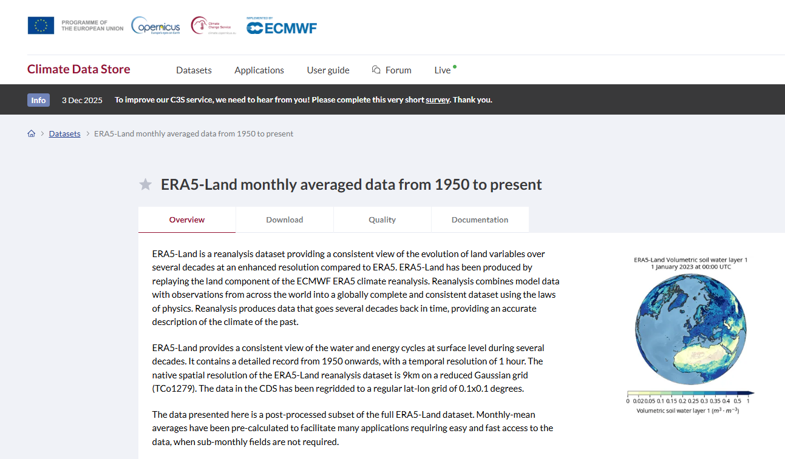
Figure 13 : Portail du Climate Data Store (CDS) permettant l'accès aux
réanalyses climatiques ERA5-Land.
Afin d'automatiser et de garantir la reproductibilité de l'extraction, nous utilisons l'API Copernicus
Climate Data Store (CDS) via un script Python dédié. Le code configure une requête client (cf.
figure 14) qui définit précisément les paramètres de téléchargement : le type de produit (moyennes mensuelles),
le format de sortie (NetCDF compressé en ZIP) et les coordonnées géographiques limitant la zone d'étude aux
frontières du Puy-de-Dôme, définies par une boîte englobante (Nord : 45.7, Est : 3.2, Sud : 45.6, Ouest : 3.1).
Figure 14 : Interface de configuration de la requête sur le Climate Data
Store montrant la sélection des variables et de la période temporelle.
La requête permet de récupérer un ensemble complet de variables thermiques essentielles pour comprendre les
interactions entre l'atmosphère et le sol forestier. Nous collectons notamment la température du point de rosée
à 2 mètres, la température de l'air à 2 mètres, ainsi que la température de surface (Skin temperature -
SKT). En complément, les températures du sol sont extraites sur quatre niveaux de profondeur
distincts (Soil temperature level 1 à 4), permettant une analyse verticale des échanges thermiques. Pour amorcer
notre modélisation spatio-temporelle, nous nous concentrerons prioritairement sur la variable
SKT à l'échelle départementale.
Une fois la requête API traitée et le fichier converti, nous obtenons une base de données structurée au format
CSV. Ce fichier constitue la matière première de notre analyse. Chaque ligne représente une mesure
spatio-temporelle précise sur le département du Puy-de-Dôme.
Figure 15 : Aperçu de la structure tabulaire des données climatiques
extraites (Fichier CSV).
Le jeu de données se décompose selon les colonnes techniques suivantes :
time : L'horodatage de la mesure, correspondant à un échantillonnage mensuel sur la période
2000-2007.
latitude / longitude : Les coordonnées géographiques précises permettant de situer chaque
relevé sur la carte du département.
skt (Skin Temperature) : La température de surface brute exprimée en Kelvin.
sd (Snow Depth) : La profondeur de neige (équivalent eau), paramètre influençant l'albédo
et l'isolation du sol.
swvl1 (Volumetric soil water layer 1) : Le volume d'eau contenu dans la première couche de
sol (0-7 cm), indicateur de l'humidité de surface.
skt_C : La température de surface convertie par nos soins en degrés
Celsius pour une interprétation physique plus intuitive.
Cet ensemble de données constitue le socle nécessaire pour engager les travaux d'ingénierie statistique
détaillés dans la section suivante. Cette étape cruciale permettra d'identifier les tendances saisonnières et
les anomalies thermiques locales à travers la génération de cartes de chaleur (Heatmaps). Ces
visualisations seront essentielles pour appréhender la distribution thermique sur la topographie du Puy-de-Dôme
et analyser précisément le gradient de température au fil des années.
Une fois cette structure spatio-temporelle bien établie, nous passerons à la phase de
prédiction. Nous confronterons alors la robustesse des Processus Gaussiens à
des architectures de réseaux de neurones plus complexes, intégrant notamment des couches LSTM (Long
Short-Term Memory). Ce choix technologique nous permettra de capturer les dépendances temporelles à
long terme inhérentes aux cycles climatiques forestiers, afin d'affiner la précision de nos modèles face aux
variations réelles du terrain.
3.2 Ingénierie des données et visualisations cartographiques
Afin d'appréhender la structure spatio-temporelle de notre jeu de données ERA5-Land, une étape cruciale
d'ingénierie des données est nécessaire. Avant de procéder à la modélisation prédictive, nous transformons
les
relevés tabulaires en représentations géographiques explicites pour identifier les gradients thermiques
régionaux.
3.2.1 Écosystème logiciel pour l'analyse spatiale
Le traitement des données géographiques et la génération de visuels dynamiques reposent sur trois bibliothèques
Python piliers. Leur utilisation conjointe permet de transformer des coordonnées brutes en une structure
cartographique exploitable.
Cartiflette : Ce module est une solution de récupération automatisée des fonds de carte
officiels (IGN, INSEE).
Utilité dans le code : Elle est utilisée via la fonction carti_download pour requêter
directement les vecteurs géographiques des départements français au format GeoJSON. Cela nous permet de
délimiter précisément la zone d'étude auvergnate (codes 03, 15, 43, 63) sans manipulation manuelle de
fichiers externes.
GeoPandas : Véritable extension de Pandas dédiée à la donnée vectorielle, cette
bibliothèque introduit le concept de GeoDataFrame.
Utilité dans le code : Elle assure la conversion des coordonnées tabulaires (latitude/longitude) en
objets géométriques projetés. Elle est le moteur de la jointure spatiale (sjoin), une opération
critique qui filtre nos points de mesure ERA5-Land pour ne conserver que ceux situés physiquement à
l'intérieur des frontières administratives de l'Auvergne.
Folium : S'appuyant sur la puissance de la bibliothèque JavaScript Leaflet, Folium
assure la couche de visualisation interactive.
Utilité dans le code : Elle permet de générer la carte finale (folium.Map) et d'y
superposer nos données thermiques sous forme de marqueurs circulaires colorés. Grâce à l'intégration de
Branca pour la gestion des colormaps, elle transforme nos calculs de moyennes min-max en un gradient
visuel intuitif où chaque point de la forêt peut être interrogé via des pop-ups informatifs.
3.2.2 Cartes de chaleur et gradients de température
La méthodologie adoptée pour la création des Heatmaps repose sur un processus de raffinement
des
données brutes ERA5-Land afin de rendre les tendances climatiques intelligibles à l'échelle régionale. Pour
optimiser la lisibilité des cartes et éviter une surcharge visuelle, nous appliquons une réduction de la
densité
de la grille par un échantillonnage d'un point sur deux.
Le traitement statistique consiste à agréger les relevés temporels pour chaque coordonnée géographique : nous
calculons la moyenne arithmétique entre les valeurs minimales et maximales de la température de surface
(SKT)
sur l'ensemble de l'année sélectionnée. Cette métrique "min-max" permet de lisser les variations
saisonnières
extrêmes tout en conservant une image fidèle du gradient thermique annuel.
Pour garantir la précision géographique de l'étude, nous utilisons les capacités de jointure spatiale de
GeoPandas afin de circonscrire l'analyse aux limites administratives officielles. Comme l'illustre la
Figure 16, notre périmètre d'étude se concentre sur les quatre départements constituant la
région Auvergne, offrant ainsi un cadre topographique varié (plaines et massifs montagneux) idéal pour
tester la
robustesse de nos modèles prédictifs.
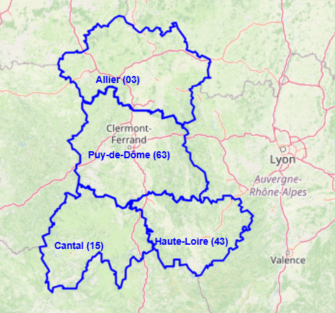
Figure 16 : Délimitation géographique de la zone d'étude comprenant
les départements de l'Allier (03), du Cantal (15), de la Haute-Loire (43) et du Puy-de-Dôme (63).
3.2.3 Représentation des variables SKT et SKT_C (Année 2000)
Pour amorcer l'analyse spatiale, nous avons procédé à une première représentation de la température de
surface
brute (SKT) exprimée en Kelvin. Cette étape est essentielle pour valider la cohérence physique des données
extraites du service Copernicus avant toute manipulation complexe. La procédure automatisée commence par le
chargement du jeu de données nettoyé et l'isolement de l'année cible, ici l'an 2000, tout en opérant une
réduction de la grille par un échantillonnage d'un point sur deux afin d'épurer le rendu visuel.
Le cœur du traitement repose sur l'intégration des contours géographiques via la bibliothèque
Cartiflette,
qui nous permet de projeter et de filtrer précisément les données sur les quatre départements de l'ancienne
région Auvergne (Allier, Cantal, Haute-Loire et Puy-de-Dôme). Grâce à l'utilisation de GeoPandas,
nous
réalisons une jointure spatiale (sjoin) pour ne conserver que les relevés situés à l'intérieur
de
ces frontières administratives. Nous calculons ensuite la valeur moyenne de la température de surface pour
chaque coordonnée géographique, agrégeant ainsi les variations temporelles mensuelles en une donnée annuelle
représentative.
La visualisation finale est générée à l'aide de Folium, où chaque point de mesure est représenté par
un
marqueur circulaire dont la couleur est indexée sur une échelle thermique inversée (du bleu pour le froid au
rouge pour le chaud). Cette carte interactive permet d'explorer les zones de chaleur par simple survol,
affichant des pop-ups informatifs avec les coordonnées exactes et la température moyenne (cf. figure 17).
Nous avons
appliqué
rigoureusement la même méthodologie pour la variable SKT_C (Celsius), confirmant ainsi la
validité de notre conversion mathématique ($T_{°C} = T_{K} - 273.15$) et assurant une base sémantique plus
intuitive pour l'interprétation climatique ultérieure (cf. figure 18).
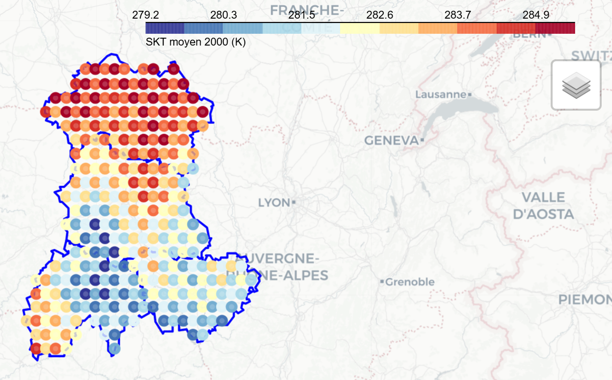
Figure 17 : Représentation de la variable SKT (Kelvin) sur la région
Auvergne en 2000.
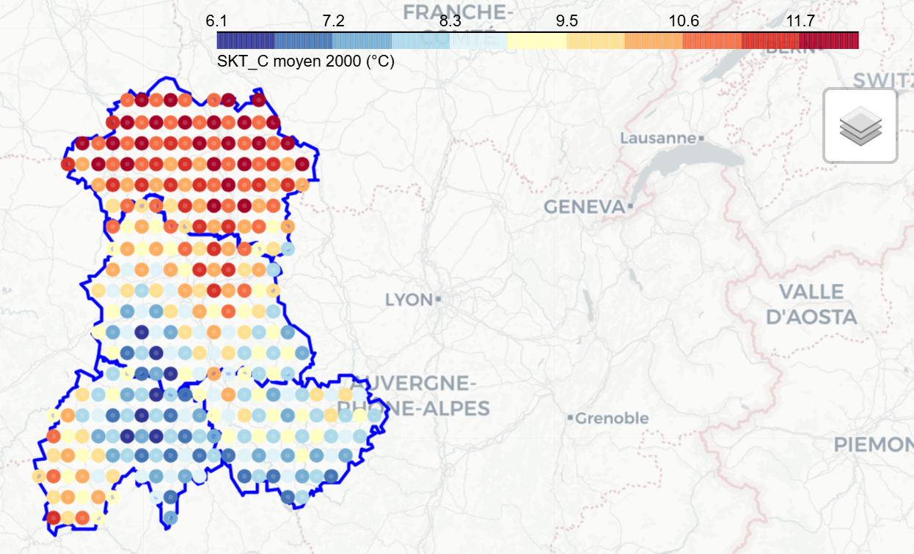
Figure 18 : Représentation de la variable SKT_C (Celsius) sur la
région
Auvergne en 2000.
3.2.4 Analyse de la moyenne min-max par coordonnée
Afin d'obtenir une vision synthétique du climat régional pour l'année 2000, nous avons mis en œuvre une
méthodologie d'agrégation statistique simplifiée mais robuste : le calcul de la moyenne min-max. Cette
approche consiste à isoler, pour chaque point géographique, les valeurs extrêmes enregistrées sur l'année
afin d'en extraire la valeur médiane via la formule $\frac{min + max}{2}$. Ce choix méthodologique est
particulièrement pertinent dans une étude préliminaire, car il permet de gommer le bruit des fluctuations
mensuelles mineures tout en capturant l'amplitude thermique réelle subie par les écosystèmes forestiers.
Le processus de visualisation repose sur un échantillonnage spatial stratégique. Pour assurer une clarté
optimale sur la carte interactive sans saturer l'information, nous avons appliqué une réduction de la
densité de la grille d'origine en ne conservant qu'un point sur deux. Cette sélection permet de maintenir
une résolution suffisante pour identifier les micro-climats locaux tout en offrant une lecture fluide du
gradient thermique à l'échelle des quatre départements de l'Auvergne.
La cartographie finale, illustrée par la Figure 19, utilise une colormap divergente
où les tons chauds mettent en exergue les zones de température de surface élevée. Le recours à une jointure
spatiale rigoureuse garantit que seuls les relevés contenus dans les frontières administratives officielles
sont pris en compte, éliminant ainsi les points marginaux. Chaque marqueur ainsi positionné devient un
vecteur d'information complet, permettant par un simple survol d'accéder aux coordonnées précises et à la
moyenne thermique calculée, facilitant l'identification visuelle des couloirs de chaleur régionaux.
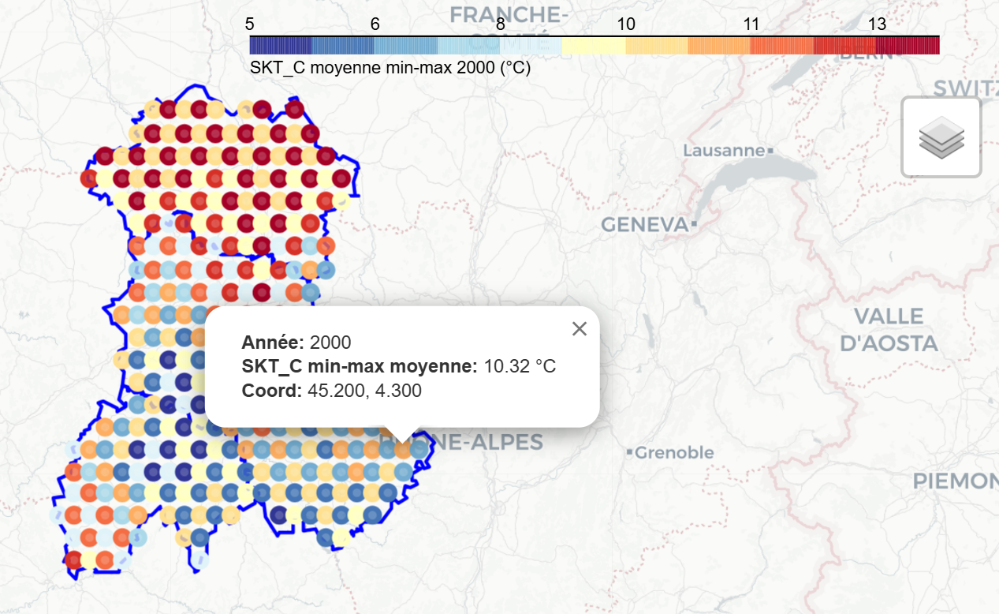
Figure 19 : Carte de la moyenne annuelle min-max pour SKT_C en 2000
avec délimitation départementale.
3.2.5 Gradient de température : Évolution 2000 vs 2007
Pour parachever cette phase d'ingénierie des données, nous avons procédé à une analyse comparative visant à
isoler l'évolution thermique spatiale sur l'ensemble de la période d'étude. La spécificité de cette approche
réside dans le calcul d'un gradient thermique ($\Delta$) par point géographique, obtenu en
soustrayant les moyennes annuelles de deux années charnières : 2000 et 2007. Cette méthode permet de mettre
en lumière les zones géographiques ayant subi les variations de température de surface les plus
significatives au cours de ces sept années.
La méthodologie conserve la rigueur des étapes précédentes, notamment l'échantillonnage d'un point sur deux
pour garantir la lisibilité et le calcul de la moyenne min-max pour stabiliser les valeurs annuelles.
L'innovation ici réside dans la fusion (merge) des données de l'an 2000 et de l'an 2007 par
coordonnées, permettant de quantifier précisément l'écart thermique local. Pour la visualisation, nous avons
opté pour une palette de couleurs hautement contrastée (du bleu sombre au rouge vif), facilitant
l'identification immédiate du réchauffement ou du refroidissement relatif des parcelles forestières
auvergnates.
Comme l'illustre la Figure 20, le calcul du delta $2007 - 2000$ révèle la progression
thermique globale, où les tons chauds marquent une augmentation de la température de surface sur la période.
À l'inverse, la Figure 21 présente la soustraction inverse ($2000 - 2007$), offrant une
perspective complémentaire sur les zones de stabilité ou de retrait thermique.
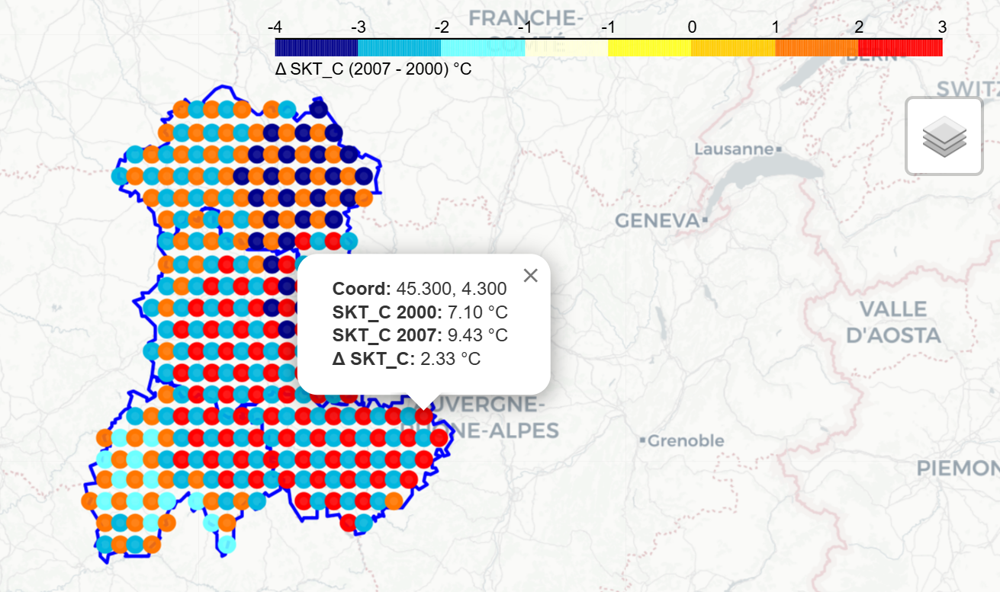
Figure 20 : Gradient thermique SKT_C ($\Delta$ 2007 - 2000) en
Auvergne avec échelle contrastée.
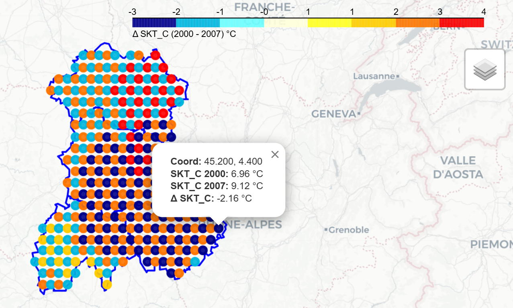
Figure 21 : Différence thermique relative ($\Delta$ 2000 - 2007)
mettant en évidence les inversions de gradient.
Synthèse et perspectives de modélisation : L'analyse de ces cartographies révèle une
hétérogénéité spatiale marquée du réchauffement de surface à travers l'Auvergne, identifiant ainsi des
"couloirs de chaleur" où les zones forestières sont particulièrement exposées au stress thermique. En
quantifiant précisément ces gradients entre 2000 et 2007, nous avons constitué une base de données
temporelle riche, indispensable pour caractériser les tendances climatiques locales.
Transition vers la modélisation : Ces indicateurs visuels marquent la fin de la phase
descriptive et
ouvrent la voie à la
prédiction. L'enjeu sera désormais de confronter la robustesse des Processus
Gaussiens, dont nous avons prouvé l'efficacité pour l'interpolation spatiale en 2D, à des
architectures de réseaux de neurones complexes. Nous intégrerons notamment des couches LSTM
(Long Short-Term Memory), spécifiquement conçues pour capturer les dépendances
séquentielles à long terme, afin de déterminer quel modèle parvient le mieux à anticiper les dynamiques
thermiques futures de ces écosystèmes fragiles.
3.3 Modélisation prédictive : Confrontation des Processus Gaussiens et des
architectures LSTM
La phase précédente d'ingénierie des données a permis de transformer des mesures tabulaires brutes en une
vision géographique cohérente, mettant en lumière des gradients thermiques et des hétérogénéités spatiales
critiques sur le territoire auvergnat. Ce constat visuel du "stress environnemental" constitue le point de
départ de notre démarche prédictive : il ne s'agit plus seulement de décrire le passé, mais d'anticiper les
dynamiques futures de la température de surface (SKT).
Pour relever ce défi, nous introduisons une confrontation entre deux paradigmes technologiques
complémentaires :
Les Processus Gaussiens (GP) : Forts de leur succès lors de nos tests théoriques en 2D,
ils sont ici mobilisés pour leur capacité exceptionnelle à l'interpolation spatiale. Leur force réside
dans la gestion rigoureuse de l'incertitude, permettant de "combler les vides" entre les stations de
mesure avec une précision mathématique inégalée.
Les Réseaux de Neurones LSTM (Long Short-Term Memory) : Contrairement aux modèles
classiques, les couches LSTM sont spécifiquement conçues pour traiter des séquences temporelles. Nous
les utilisons ici pour leur "mémoire" capable de capturer les cycles saisonniers et les dépendances à
long terme au sein de nos séries chronologiques (2000-2007), là où des modèles statiques échoueraient à
percevoir la continuité du changement climatique.
Cette double approche vise à déterminer si la précision géométrique des GP surpasse la capacité
d'apprentissage séquentiel des LSTM, ou si une combinaison de ces forces est nécessaire pour modéliser avec
fiabilité l'évolution thermique de nos écosystèmes forestiers.